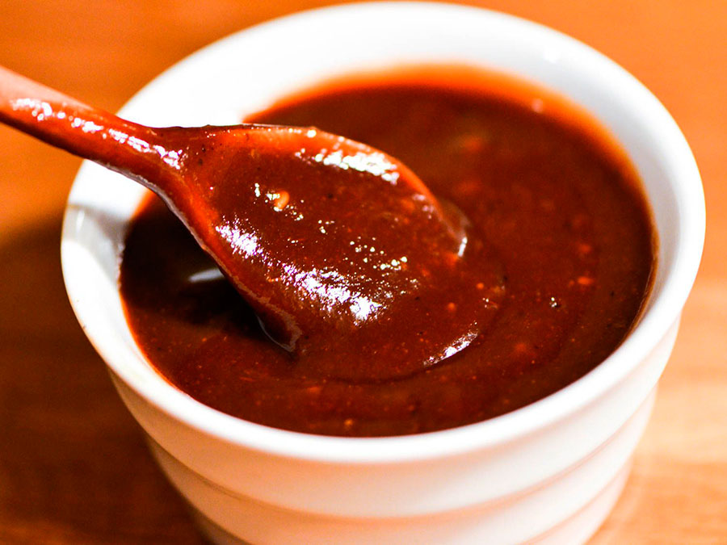

Wolnamssam
Niño envuelto en hoja de arroz

- Preparacion: 20 mins
- Cocción: 20 mins
- Adicional: 60 mins
- Total: 100 mins
- Porciones: 2
Ingredientes
- Tortilla de arroz seco (son tortillas similares a las mexicanas, pero de arroz, se consiguen en los mercados coreanos): 6 hojas
- Oi: 1 unidad
- Morrón amarillo, verde y rojo: 1/4 de unidad de cada uno
- Champiñón: 6 unidades
- Cebolla: 1/2 unidad
- Huevo: 2 unidades
- Pechuga de pollo: 200 gr
- Manzana: 1/4 unidad
- Lata de ananá: 1/2 lata
- Albahaca: a gusto
- Ajo: 1 diente
- Salsa de soja: 1 cuchara de té
Para la salsa
- Jenjibre: 1 pedazo del tamaño de un diente de ajo
- Ajo: 2 dientes
- Salsa de soja: 2 cuchara de té
- Aceite de oliva: 5 cucharas de té
- Ají picante: 1 unidad
- Gochugaru molido grueso (ají picante molido): 1 cuchara de té
- Azúcar: 1 cuchara de té
- Sal: una pizca
- Pimienta: una pizca
Pasos

La salsa
- Saltear el jengibre y el ajo picado en aceite de oliva.
- Agregar el resto del aceite de oliva, salsa de soja y gochugaru. Hervir. Por último, agregar el ají picante picado.
El wolnamssam
- Cortar todas las verduras y frutas en tiras de 5 cm. Reservar.
- El huevo: batir el huevo y cocinar la mezcla en una sartén. Cortar en tiras.
- El pollo: cortar la pechuga en tiras y condimentar con salsa de soja, sal, ajo picado, azúcar y pimienta. Dejar en la heladera por una hora y luego saltear. Se puede reemplazar el pollo con carne vacuna para milanesa, o por bulgogi.
- Para el armado de los niños envueltos: remojar la tortilla de arroz en agua tibia (con cuidado para que no se doble y no se pegoteé sobre sí) y colocar un poco de cada ingrediente previamente preparado y cerrar el paquete.
- Se debe servir respetando una distancia entre ellos, ya que se pueden pegar entre ellos... y !listo para servir!